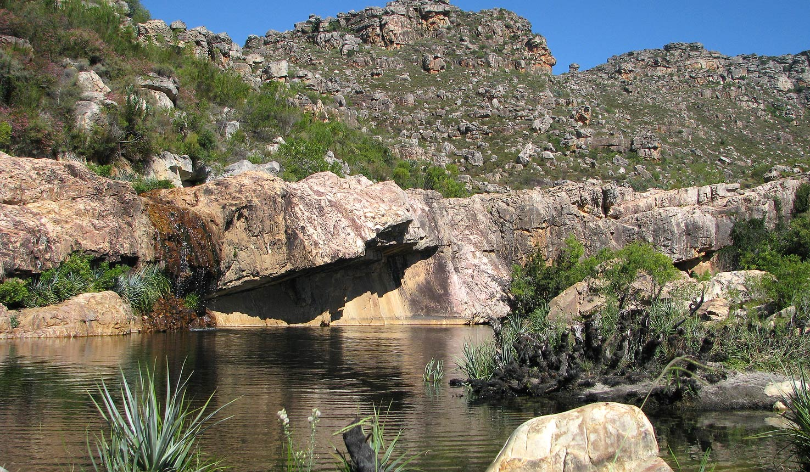

The Cape of the South
South Africa experiences a high degree of sunshine with rainfall about half of the global average, increasing from west to east, and with semi-desert regions in the north-west. While the Western Cape has a Mediterranean climate with winter rainfall, most of the country experiences summer rain.
Climatic zones are often referred to by the seasonal pattern of rainfall. The winter rainfall region is confined to a relatively small area in the south-west, the Western Cape area, where gentle rain falls from May to August but the summers are dry. The summer rainfall region is the largest, being most of the country north of the coastal areas and the north west arid desert. Rain falls from October to February and is often heavy, with the amount of precipitation increasing from west to east. The summer and winter rainfall region is the Eastern Cape. The arid regions are in the north-west, with the driest areas being the north-west coast. Vegetation tends to vary by climatic zone and these also correspond to the horticultural zones